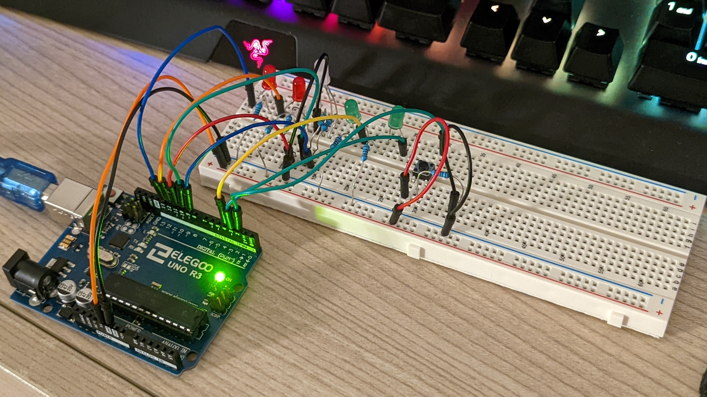
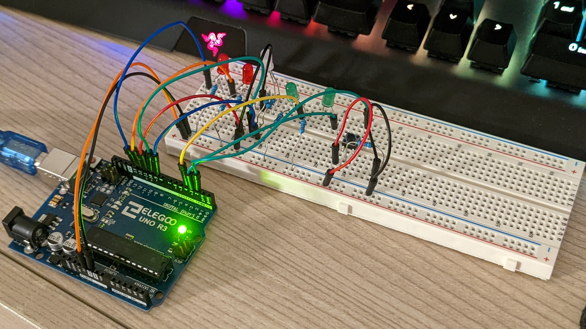
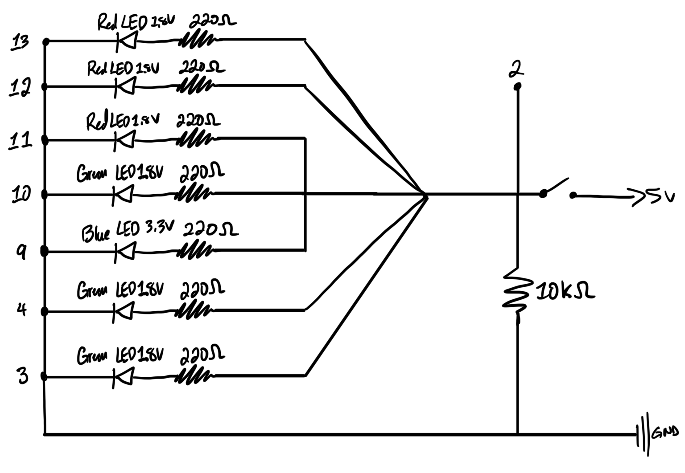
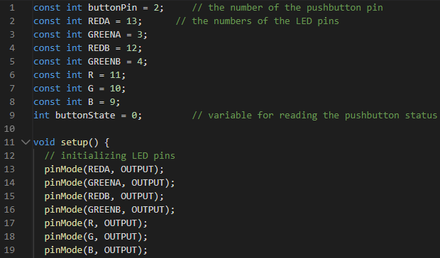
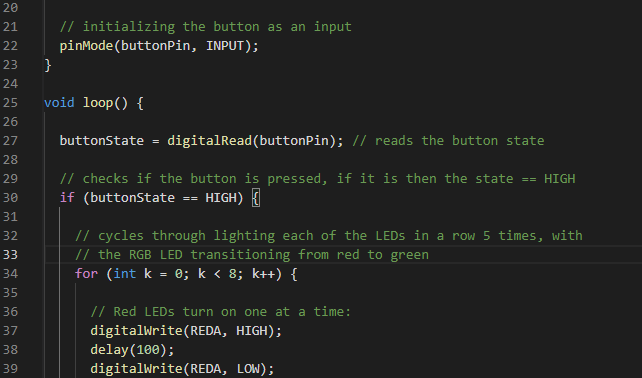
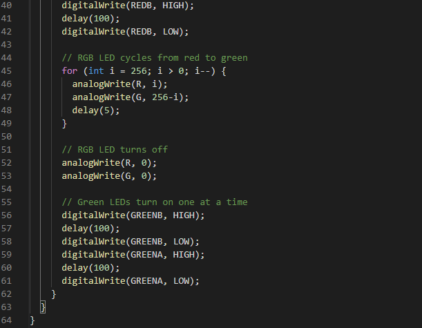
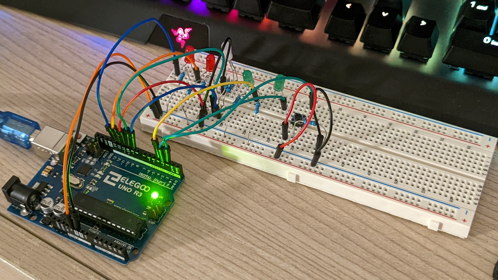

Final circuit result!
 


The circuit was powered with 5V through USB and I used the red, green and RGB LEDs included in our kits.
I used 220 ohm resistors for all of the LEDs I used because they were either 1.8V(R/G) or 3.3V(B) and they
needed to run at 30mA or less. For the button I used a 10k ohm resistor.
  
The firmware used to control the lights was programmed in Arduino! I initialized the pins as outputs and
the button as an input because it waits for a press to close the circuit. I programmed the LEDs to turn on
when the button is pressed, where they turn on one at a time (from left to right) and the RGB light fades
from red to green, creating a wave effect.
